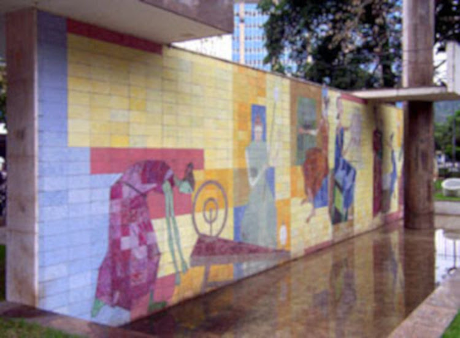

FIANDEIRAS
Vamos conhecer mais sobre o monumento As Fiandeiras de Cândido Portinari e Francisco Bolonha.
-
Sobre o monumento: A obra “As Fiandeiras”, de Cândido Portinari, foi criada em 1956 e faz parte do Monumento a José Inácio Peixoto, localizado em Cataguases. O painel representa mulheres trabalhando com a fiação e foi produzido em cerâmica de grés esmaltada. A obra possui aproximadamente 3,46 metros de altura e 15 metros de largura. O projeto do monumento foi realizado pelo arquiteto Francisco Bolonha, que foi um importante representante da arquitetura moderna brasileira. Além desse monumento, Bolonha realizou outras obras em Cataguases e em diferentes cidades do Brasil. Uma curiosidade é que o monumento foi erguido por iniciativa dos operários da Companhia Industrial de Cataguases. Bolonha foi contratado para participar do projeto do Monumento a José Inácio Peixoto, em Cataguases. A cidade vivia um período de valorização da arquitetura e da arte moderna, incentivado por empresários e artistas locais. O monumento reuniu trabalhos de importantes artistas, como Cândido Portinari e Bruno Giorgi.
-
As fiandeiras: Compreender quem eram as fiandeiras retratadas no famoso painel de Cataguases, localizado na Praça José Inácio Peixoto (Vila Tereza), é necessário olhar para a história sob duas perspectivas: a identidade real daquelas mulheres no dia a dia da cidade e a identidade artística criada pelo pintor Candido Portinari em 1956. Elas não representam figuras com nomes e sobrenomes biográficos da história política, mas sim a alma operária do município. Fisicamente e historicamente, as fiandeiras eram as mulheres trabalhadoras da Companhia Industrial Cataguases. Na década de 1950, a fiação e a tecelagem de algodão eram as principais atividades econômicas da cidade.
-
A indústria textil: Fundada em 1936, a Companhia Industrial Cataguases teve papel fundamental na industrialização de Cataguases e no desenvolvimento da Zona da Mata. Desde seus primeiros anos, a indústria gerou empregos, movimentou o comércio e incentivou o crescimento de outros setores da região, ajudando a consolidar Cataguases como um importante polo industrial. Ao longo das décadas, a empresa passou por processos de expansão e modernização, investindo em tecnologia, qualidade e sustentabilidade. Atualmente, aos 90 anos, conta com cerca de 1.500 colaboradores, produz aproximadamente 27 milhões de metros de tecido por ano e exporta para 24 países, levando o nome de Cataguases e do Brasil ao mercado internacional. Além de sua importância econômica, a Companhia também contribui para a educação, cultura, geração de empregos e desenvolvimento regional, mantendo iniciativas voltadas à comunidade e à sustentabilidade. Para o futuro, a indústria busca continuar avançando em inovação, tecnologia e responsabilidade ambiental, mantendo sua tradição e ampliando sua presença no mercado global.
-
Bio. Cândido Portinari: Cândido Portinari (1903–1962) foi um dos maiores artistas brasileiros do século XX. Nascido em Brodowski, São Paulo, veio de uma família humilde e desde cedo demonstrou talento para a pintura. Estudou no Rio de Janeiro e, após ganhar uma viagem à Europa, aprimorou sua arte. Em suas obras, retratou principalmente o povo brasileiro, os trabalhadores, a vida no campo e as desigualdades sociais. Entre suas obras mais famosas estão Retirantes, O Lavrador de Café e Guerra e Paz. Portinari deixou uma importante contribuição para a arte brasileira e é lembrado até hoje por transformar a realidade do povo em arte.
-
Bio. Francisco Bolonha: rancisco Bolonha foi um importante arquiteto brasileiro ligado ao modernismo. Seu trabalho destacou-se pela valorização de formas simples, funcionais e integradas à arte. Em Cataguases, participou de importantes projetos arquitetônicos, como o Monumento a José Inácio Peixoto, que reúne obras de artistas como Cândido Portinari e Bruno Giorgi. Sua contribuição ajudou a transformar Cataguases em um importante exemplo da arquitetura modernista brasileira.
-
Curiosidades: A obra As Fiandeiras, de Cândido Portinari, foi criada em 1956 e está localizada na Praça José Inácio Peixoto, em Cataguases. O painel é feito de azulejos vitrificados e representa mulheres trabalhando na indústria têxtil, fazendo referência à história e à tradição industrial da cidade. Uma curiosidade é que a obra faz parte do Monumento a José Inácio Peixoto, que também possui a escultura A Família, de Bruno Giorgi. O conjunto foi projetado pelo arquiteto Francisco Bologna. As Fiandeiras é uma obra importante para Cataguases e faz parte do conjunto de patrimônios modernistas que tornam a cidade conhecida por sua arte e arquitetura.